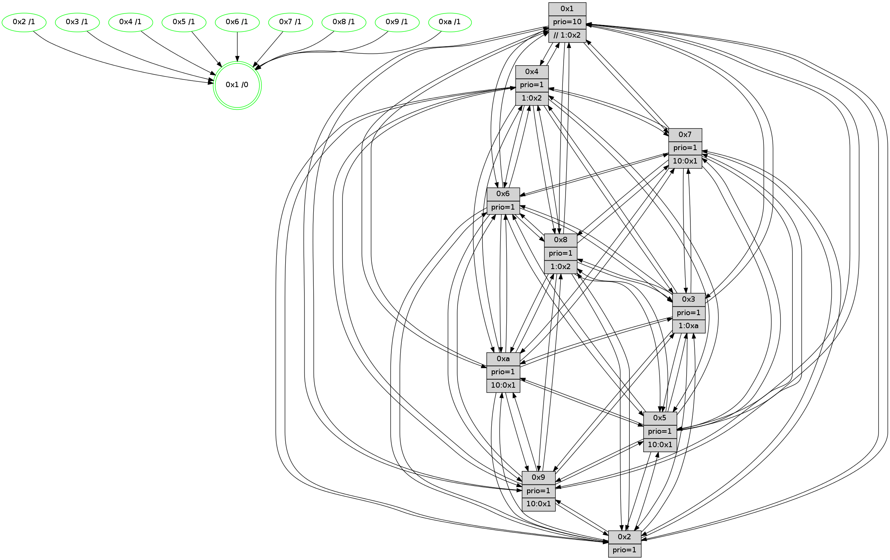

>> << IDX [start] -100 -25 -5 +0 +5 +25 +100 [1055.0078361]
 Previous packets
----------------------------------------------------------------------
1050.219069 beacon01(faad) #0 coord=01,02,03,04,05,06,07,0a,09,08 cycle=688.0ms assoc
-- color-indic=1 64 b1 09
1050.229051 beacon02(faad) #0 coord=01,02,03,04,05,06,07,0a,09,08 cycle=688.0ms assoc 64 22 38
1050.239051 beacon03(faad) #0 coord=01,02,03,04,05,06,07,0a,09,08 cycle=688.0ms assoc 64 58 75
1050.249053 beacon04(faad) #0 coord=01,02,03,04,05,06,07,0a,09,08 cycle=688.0ms assoc 64 2f 9f
1050.259053 beacon05(faad) #0 coord=01,02,03,04,05,06,07,0a,09,08 cycle=688.0ms assoc 64 55 d2
1050.269053 beacon06(faad) #0 coord=01,02,03,04,05,06,07,0a,09,08 cycle=688.0ms assoc 64 db 05
1050.279053 beacon07(faad) #0 coord=01,02,03,04,05,06,07,0a,09,08 cycle=688.0ms assoc 64 a1 48
1050.289058 beacon0a(faad) #0 coord=01,02,03,04,05,06,07,0a,09,08 cycle=688.0ms assoc 64 d0 43
1050.299057 beacon09(faad) #0 coord=01,02,03,04,05,06,07,0a,09,08 cycle=688.0ms assoc 64 5e 94
1050.309058 beacon08(faad) #0 coord=01,02,03,04,05,06,07,0a,09,08 cycle=688.0ms assoc 64 24 d9
1050.320273 [Hello(2): seq=667 sym=4,5,7,6,3,9,8,10,1 sysInfo=hasWarning stat=4:14,11,11,8/5:2,0,1,0/7:15,14,9,11/6:15,8,1,9/3:13,10,0,7/9:8,9,3,5/8:0,6,12,9/10:7,12,3,10/1:5,7,11,1]
1050.323347 [Hello(1): seq=580 sym=4,2,9,5,10,3,8,6,7 sysInfo=coloring-mode-on,ColoringModeRequestCalled stat=4:3,1,7,2/2:1,11,6,13/9:12,6,5,6/5:5,9,15,7/10:8,2,7,5/3:12,2,11,5/8:6,7,5,1/6:9,3,6,11/7:13,8,6,12]
1050.326077 [Hello(6): seq=671 sym=2,3,5,4,7,9,8,10,1 sysInfo= stat=2:15,1,6,3/3:9,6,7,10/5:6,3,6,0/4:11,12,15,3/7:0,9,7,9/9:12,11,7,6/8:8,3,3,3/10:11,12,11,12/1:7,4,10,1]
1050.328582 [STC(8)->1 #0.151 tree-change,inconsistent-stability,stable,to-color d=1]
1050.330187 [Color(6) seq=303 @0:0 prio=1]
1050.331495 [Color(8) seq=293 @0:0 prio=1]
1050.336249 [Hello(3): seq=671 sym=1,7,6,2,4,8,9,10,5 sysInfo=hasWarning stat=1:5,13,7,0/7:5,11,15,9/6:8,12,14,3/2:7,3,1,13/4:11,2,5,9/8:4,8,14,2/9:3,2,4,12/10:4,15,1,3/5:13,5,10,14]
1050.339781 [STC(10)->1 #0.151 tree-change,inconsistent-stability,stable,to-color d=1]
1050.341407 [Color(10) seq=260 @0:0 prio=1 >10.@1,1.@2,1.@3,1.@5]
1050.344258 [Hello(5): seq=671 sym=7,6,4,3,1,9,8,10,2 sysInfo=hasWarning stat=7:8,13,12,11/6:4,5,12,0/4:7,14,7,10/3:3,2,1,12/1:11,8,13,1/9:4,0,7,7/8:8,14,3,0/10:15,8,1,7/2:7,0,6,3]
1050.348932 [STC(3)->1 #0.151 tree-change,inconsistent-stability,stable,to-color d=1]
1050.351205 [Color(3) seq=300 @0:0 prio=1 >1.@a]
----------------------------------------------------------------------
1051.007200 beacon01(faad) #0 coord=01,02,03,04,05,06,07,0a,09,08 cycle=688.0ms assoc
-- color-indic=1 64 0d 0c
1051.017182 beacon02(faad) #0 coord=01,02,03,04,05,06,07,0a,09,08 cycle=688.0ms assoc 64 9e 3d
1051.027183 beacon03(faad) #0 coord=01,02,03,04,05,06,07,0a,09,08 cycle=688.0ms assoc 64 e4 70
1051.037184 beacon04(faad) #0 coord=01,02,03,04,05,06,07,0a,09,08 cycle=688.0ms assoc 64 93 9a
1051.047182 beacon05(faad) #0 coord=01,02,03,04,05,06,07,0a,09,08 cycle=688.0ms assoc 64 e9 d7
1051.057184 beacon06(faad) #0 coord=01,02,03,04,05,06,07,0a,09,08 cycle=688.0ms assoc 64 67 00
1051.067184 beacon07(faad) #0 coord=01,02,03,04,05,06,07,0a,09,08 cycle=688.0ms assoc 64 1d 4d
1051.077189 beacon0a(faad) #0 coord=01,02,03,04,05,06,07,0a,09,08 cycle=688.0ms assoc 64 6c 46
1051.087187 beacon09(faad) #0 coord=01,02,03,04,05,06,07,0a,09,08 cycle=688.0ms assoc 64 e2 91
1051.097188 beacon08(faad) #0 coord=01,02,03,04,05,06,07,0a,09,08 cycle=688.0ms assoc 64 98 dc
1051.109701 [Hello(8): seq=615 sym=5,2,3,4,9,6,7,10,1 sysInfo=hasWarning stat=5:0,13,10,0/2:14,12,4,7/3:12,13,9,14/4:8,15,1,9/9:5,5,10,2/6:1,4,7,11/7:4,11,8,2/10:13,9,13,3/1:6,15,9,0]
1051.112421 [Hello(7): seq=671 sym=2,3,5,6,8,9,10,1 sysInfo=hasWarning stat=2:8,4,12,14/3:0,15,10,14/5:3,4,12,1/6:5,1,9,7/8:6,6,7,1/9:12,10,8,0/10:5,8,14,4/1:1,1,12,0]
1051.115091 [Hello(10): seq=604 sym=6,2,3,8,7,5,9,4,1 sysInfo=hasWarning stat=6:4,7,9,4/2:7,8,15,7/3:12,1,1,10/8:7,13,3,0/7:6,10,8,4/5:14,7,9,14/9:8,2,10,1/4:0,1,11,8/1:6,11,2,1]
1051.121475 [Color(4) seq=251 @0:0 prio=1 >1.@2,1.@3,1.@5,1.@6]
1051.123062 [Color(1) seq=352 @0:0 prio=10 >>1.@2,1.@3,1.@5]
1051.126093 [Color(7) seq=230 @0:0 prio=1]
1051.127366 [Color(9) seq=277 @0:0 prio=1]
1051.129654 [Color(2) seq=276 @0:0 prio=1]
----------------------------------------------------------------------
1051.795331 beacon01(faad) #0 coord=01,02,03,04,05,06,07,0a,09,08 cycle=688.0ms assoc
-- color-indic=1 64 d9 39
1051.805314 beacon02(faad) #0 coord=01,02,03,04,05,06,07,0a,09,08 cycle=688.0ms assoc 64 4a 08
1051.815313 beacon03(faad) #0 coord=01,02,03,04,05,06,07,0a,09,08 cycle=688.0ms assoc 64 30 45
1051.825313 beacon04(faad) #0 coord=01,02,03,04,05,06,07,0a,09,08 cycle=688.0ms assoc 64 47 af
1051.835314 beacon05(faad) #0 coord=01,02,03,04,05,06,07,0a,09,08 cycle=688.0ms assoc 64 3d e2
1051.845313 beacon06(faad) #0 coord=01,02,03,04,05,06,07,0a,09,08 cycle=688.0ms assoc 64 b3 35
1051.855314 beacon07(faad) #0 coord=01,02,03,04,05,06,07,0a,09,08 cycle=688.0ms assoc 64 c9 78
1051.865319 beacon0a(faad) #0 coord=01,02,03,04,05,06,07,0a,09,08 cycle=688.0ms assoc 64 b8 73
1051.875319 beacon09(faad) #0 coord=01,02,03,04,05,06,07,0a,09,08 cycle=688.0ms assoc 64 36 a4
1051.885320 beacon08(faad) #0 coord=01,02,03,04,05,06,07,0a,09,08 cycle=688.0ms assoc 64 4c e9
1051.896867 [Hello(5): seq=672 sym=7,6,4,3,1,9,8,10,2 sysInfo=hasWarning stat=7:8,14,12,11/6:4,5,12,0/4:7,15,7,10/3:3,3,2,12/1:11,8,13,1/9:4,1,7,7/8:9,14,3,0/10:15,8,1,7/2:7,1,6,3]
1051.901246 [Hello(3): seq=672 sym=1,7,6,2,4,8,9,10,5 sysInfo=hasWarning stat=1:6,13,7,0/7:6,12,15,9/6:8,12,14,3/2:8,4,1,13/4:11,3,5,9/8:5,8,14,2/9:3,3,4,12/10:5,15,1,3/5:13,6,10,14]
1051.904389 [Color(3) seq=301 @0:0 prio=1 >1.@a]
1051.906765 [Hello(2): seq=668 sym=4,5,7,6,3,9,8,10,1 sysInfo=hasWarning stat=4:14,11,11,8/5:3,0,1,0/7:15,14,9,11/6:0,9,1,9/3:14,11,1,7/9:8,9,3,5/8:1,7,13,9/10:7,13,4,10/1:6,7,11,1]
1051.910917 [Hello(6): seq=672 sym=2,3,5,4,7,9,8,10,1 sysInfo= stat=2:0,2,6,3/3:10,7,8,10/5:7,4,6,0/4:11,13,15,3/7:1,10,7,9/9:12,12,7,6/8:9,4,3,3/10:12,13,12,12/1:8,4,10,1]
1051.915986 [Color(6) seq=304 @0:0 prio=1]
1051.919476 [Color(10) seq=261 @0:0 prio=1 >10.@1,1.@2,1.@3,1.@5]
----------------------------------------------------------------------
1052.583463 beacon01(faad) #0 coord=01,02,03,04,05,06,07,0a,09,08 cycle=688.0ms assoc
-- color-indic=1 64 65 3c
1052.593444 beacon02(faad) #0 coord=01,02,03,04,05,06,07,0a,09,08 cycle=688.0ms assoc 64 f6 0d
1052.603445 beacon03(faad) #0 coord=01,02,03,04,05,06,07,0a,09,08 cycle=688.0ms assoc 64 8c 40
1052.613445 beacon04(faad) #0 coord=01,02,03,04,05,06,07,0a,09,08 cycle=688.0ms assoc 64 fb aa
1052.623446 beacon05(faad) #0 coord=01,02,03,04,05,06,07,0a,09,08 cycle=688.0ms assoc 64 81 e7
1052.633445 beacon06(faad) #0 coord=01,02,03,04,05,06,07,0a,09,08 cycle=688.0ms assoc 64 0f 30
1052.643448 beacon07(faad) #0 coord=01,02,03,04,05,06,07,0a,09,08 cycle=688.0ms assoc 64 75 7d
1052.653450 beacon0a(faad) #0 coord=01,02,03,04,05,06,07,0a,09,08 cycle=688.0ms assoc 64 04 76
1052.673451 beacon08(faad) #0 coord=01,02,03,04,05,06,07,0a,09,08 cycle=688.0ms assoc 64 f0 ec
1052.685633 [Hello(8): seq=616 sym=5,2,3,4,9,6,7,10,1 sysInfo=hasWarning stat=5:1,13,10,0/2:15,13,4,7/3:12,13,9,14/4:8,0,1,9/9:5,6,10,2/6:2,5,7,11/7:5,12,8,2/10:14,10,13,3/1:6,15,9,0]
1052.688666 [Hello(7): seq=672 sym=2,3,5,6,8,9,10,1 asym= sysInfo=hasWarning stat=2:9,5,12,14/3:1,0,10,14/5:4,4,12,1/6:6,2,9,7/8:7,6,7,1/9:12,11,8,0/10:5,9,14,4/1:1,1,12,0]
1052.691048 [Hello(9): seq=616 sym=2,5,3,7,6,8,10,1 sysInfo=hasWarning stat=2:8,14,3,4/5:14,12,2,5/3:9,11,5,14/7:15,3,3,10/6:7,9,12,9/8:4,8,6,3/10:9,0,7,3/1:13,6,12,1]
1052.693725 [Color(7) seq=231 @0:0 prio=1]
1052.695506 [Hello(10): seq=605 sym=6,2,3,8,7,5,9,4,1 sysInfo=hasWarning stat=6:4,7,9,4/2:7,9,15,7/3:12,1,1,10/8:7,13,3,0/7:6,11,8,4/5:14,7,9,14/9:8,3,10,1/4:1,2,11,8/1:7,11,2,1]
1052.699185 [Color(5) seq=279 @0:0 prio=1 >10.@1,1.@2,1.@3,1.@4]
1052.701438 [Color(2) seq=277 @0:0 prio=1]
1052.705459 [Hello(4): seq=672 sym=5,7,6,2,3,9,8,10,1 sysInfo= stat=5:1,11,5,14/7:9,15,4,9/6:0,13,2,10/2:3,13,15,11/3:3,9,3,10/9:2,6,10,9/8:11,1,8,4/10:4,5,12,12/1:10,8,11,1]
1052.708403 [Color(1) seq=353 @0:0 prio=10 >>1.@2,1.@3,1.@5]
1052.710502 [Color(4) seq=252 @0:0 prio=1 >1.@2,1.@3,1.@5,1.@6]
----------------------------------------------------------------------
1053.371592 beacon01(faad) #0 coord=01,02,03,04,05,06,07,0a,09,08 cycle=688.0ms assoc
-- color-indic=1 64 a1 32
1053.381573 beacon02(faad) #0 coord=01,02,03,04,05,06,07,0a,09,08 cycle=688.0ms assoc 64 32 03
1053.391575 beacon03(faad) #0 coord=01,02,03,04,05,06,07,0a,09,08 cycle=688.0ms assoc 64 48 4e
1053.401574 beacon04(faad) #0 coord=01,02,03,04,05,06,07,0a,09,08 cycle=688.0ms assoc 64 3f a4
1053.411575 beacon05(faad) #0 coord=01,02,03,04,05,06,07,0a,09,08 cycle=688.0ms assoc 64 45 e9
1053.421575 beacon06(faad) #0 coord=01,02,03,04,05,06,07,0a,09,08 cycle=688.0ms assoc 64 cb 3e
1053.431577 beacon07(faad) #0 coord=01,02,03,04,05,06,07,0a,09,08 cycle=688.0ms assoc 64 b1 73
1053.441579 beacon0a(faad) #0 coord=01,02,03,04,05,06,07,0a,09,08 cycle=688.0ms assoc 64 c0 78
1053.451583 beacon09(faad) #0 coord=01,02,03,04,05,06,07,0a,09,08 cycle=688.0ms assoc 64 4e af
1053.461580 beacon08(faad) #0 coord=01,02,03,04,05,06,07,0a,09,08 cycle=688.0ms assoc 64 34 e2
1053.472818 [Hello(5): seq=673 sym=7,6,4,3,1,9,8,10,2 sysInfo=hasWarning stat=7:8,14,12,11/6:5,6,12,0/4:8,0,7,10/3:4,3,2,12/1:11,9,13,1/9:4,1,7,7/8:10,15,3,0/10:15,9,1,7/2:8,2,6,3]
1053.476776 [Color(10) seq=262 @0:0 prio=1 >10.@1,1.@2,1.@3,1.@5]
1053.479315 [Hello(1): seq=582 sym=4,2,9,5,10,3,8,6,7 sysInfo=coloring-mode-on,ColoringModeRequestCalled stat=4:3,2,7,2/2:2,12,6,13/9:12,7,5,6/5:6,9,15,7/10:8,4,8,5/3:14,4,12,5/8:8,8,6,1/6:11,5,6,11/7:13,9,6,12]
1053.481956 [Hello(2): seq=669 sym=4,5,7,6,3,9,8,10,1 sysInfo=hasWarning stat=4:15,12,11,8/5:3,0,1,0/7:15,14,9,11/6:1,10,1,9/3:14,11,1,7/9:8,9,3,5/8:2,7,13,9/10:7,14,4,10/1:6,8,11,1]
1053.484497 [Color(8) seq=295 @0:0 prio=1 >1.@2,1.@3,1.@5,1.@a]
1053.486119 [Hello(6): seq=673 sym=2,3,5,4,7,9,8,10,1 asym= sysInfo= stat=2:0,3,6,3/3:10,7,8,10/5:8,5,6,0/4:12,14,15,3/7:2,11,7,9/9:13,12,7,6/8:10,4,3,3/10:13,14,12,12/1:8,5,10,1]
1053.489599 [Color(6) seq=305 @0:0 prio=1]
1053.491682 [STC(1) #0.152 tree-change,inconsistent-stability,stable,to-color d=0]
1053.495112 [Hello(3): seq=673 sym=1,7,6,2,4,8,9,10,5 sysInfo=hasWarning stat=1:7,14,7,0/7:7,13,15,9/6:9,13,14,3/2:9,5,1,13/4:12,4,5,9/8:6,8,14,2/9:4,3,4,12/10:6,0,1,3/5:13,7,10,14]
1053.498272 [Color(3) seq=302 @0:0 prio=1 >1.@a]
----------------------------------------------------------------------
1054.159722 beacon01(faad) #0 coord=01,02,03,04,05,06,07,0a,09,08 cycle=688.0ms assoc
-- color-indic=1 64 1d 37
1054.169703 beacon02(faad) #0 coord=01,02,03,04,05,06,07,0a,09,08 cycle=688.0ms assoc 64 8e 06
1054.179703 beacon03(faad) #0 coord=01,02,03,04,05,06,07,0a,09,08 cycle=688.0ms assoc 64 f4 4b
1054.189705 beacon04(faad) #0 coord=01,02,03,04,05,06,07,0a,09,08 cycle=688.0ms assoc 64 83 a1
1054.199705 beacon05(faad) #0 coord=01,02,03,04,05,06,07,0a,09,08 cycle=688.0ms assoc 64 f9 ec
1054.209705 beacon06(faad) #0 coord=01,02,03,04,05,06,07,0a,09,08 cycle=688.0ms assoc 64 77 3b
1054.219705 beacon07(faad) #0 coord=01,02,03,04,05,06,07,0a,09,08 cycle=688.0ms assoc 64 0d 76
1054.229710 beacon0a(faad) #0 coord=01,02,03,04,05,06,07,0a,09,08 cycle=688.0ms assoc 64 7c 7d
1054.239710 beacon09(faad) #0 coord=01,02,03,04,05,06,07,0a,09,08 cycle=688.0ms assoc 64 f2 aa
1054.249711 beacon08(faad) #0 coord=01,02,03,04,05,06,07,0a,09,08 cycle=688.0ms assoc 64 88 e7
1054.261203 [Hello(8): seq=617 sym=5,2,3,4,9,6,7,10,1 sysInfo=hasWarning stat=5:2,14,10,0/2:15,14,4,7/3:13,14,9,14/4:9,1,1,9/9:6,6,10,2/6:3,6,7,11/7:6,12,8,2/10:15,10,13,3/1:6,0,10,0]
1054.265146 [Hello(10): seq=606 sym=6,2,3,8,7,5,9,4,1 sysInfo=hasWarning stat=6:5,8,9,4/2:8,10,15,7/3:13,2,1,10/8:7,14,3,0/7:6,11,8,4/5:15,8,9,14/9:8,3,10,1/4:2,3,11,8/1:8,12,3,1]
1054.268250 [Hello(4): seq=673 sym=5,7,6,2,3,9,8,10,1 sysInfo= stat=5:2,11,5,14/7:9,15,4,9/6:1,14,2,10/2:4,13,15,11/3:4,10,3,10/9:2,6,10,9/8:12,2,8,4/10:4,6,12,12/1:11,8,12,1]
1054.271122 [STC(10)->1 #0.152 tree-change,inconsistent-stability,stable,to-color d=1]
1054.272731 [Color(4) seq=253 @0:0 prio=1 >1.@2,1.@3,1.@5,1.@6]
1054.274935 [STC(5)->1 #0.152 tree-change,inconsistent-stability,stable,to-color d=1]
1054.276471 [STC(8)->1 #0.152 tree-change,inconsistent-stability,stable,to-color d=1]
1054.277870 [Hello(7): seq=673 sym=2,3,5,6,4,8,9,10,1 sysInfo=hasWarning stat=2:10,6,12,14/3:2,1,10,14/5:5,5,12,1/6:7,3,9,7/4:0,1,0,0/8:8,7,7,1/9:12,11,8,0/10:6,10,14,4/1:2,2,13,0]
1054.280600 [STC(6)->1 #0.152 tree-change,inconsistent-stability,stable,to-color d=1]
1054.282892 [STC(2)->1 #0.152 tree-change,inconsistent-stability,stable,to-color d=1]
1054.284674 [STC(7)->1 #0.152 tree-change,inconsistent-stability,stable,to-color d=1]
1054.286992 [Hello(9): seq=617 sym=2,5,3,4,7,6,8,10,1 sysInfo=hasWarning stat=2:9,15,3,4/5:15,13,2,5/3:10,12,5,14/4:0,1,0,0/7:15,3,3,10/6:8,10,12,9/8:5,9,6,3/10:10,1,7,3/1:14,7,13,1]
1054.289748 [Color(1) seq=354 @0:0 prio=10 >>1.@2,1.@3,1.@5]
1054.292183 [STC(9)->1 #0.152 tree-change,inconsistent-stability,stable,to-color d=1]
1054.293741 [Color(7) seq=232 @0:0 prio=1 >10.@1,1.@2,1.@3,1.@5]
1054.296956 [Color(2) seq=278 @0:0 prio=1]
1054.299403 [Color(9) seq=279 @0:0 prio=1 >10.@1,1.@2,1.@3,1.@5]
----------------------------------------------------------------------
1054.947851 beacon01(faad) #0 coord=01,02,03,04,05,06,07,0a,09,08 cycle=688.0ms assoc
-- color-indic=1 64 29 2f
1054.957834 beacon02(faad) #0 coord=01,02,03,04,05,06,07,0a,09,08 cycle=688.0ms assoc 64 ba 1e
1054.967834 beacon03(faad) #0 coord=01,02,03,04,05,06,07,0a,09,08 cycle=688.0ms assoc 64 c0 53
1054.977834 beacon04(faad) #0 coord=01,02,03,04,05,06,07,0a,09,08 cycle=688.0ms assoc 64 b7 b9
1054.987835 beacon05(faad) #0 coord=01,02,03,04,05,06,07,0a,09,08 cycle=688.0ms assoc 64 cd f4
1054.997833 beacon06(faad) #0 coord=01,02,03,04,05,06,07,0a,09,08 cycle=688.0ms assoc 64 43 23